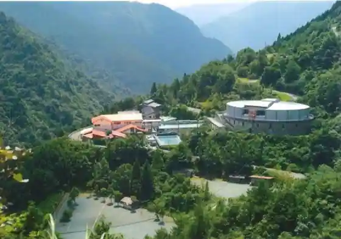
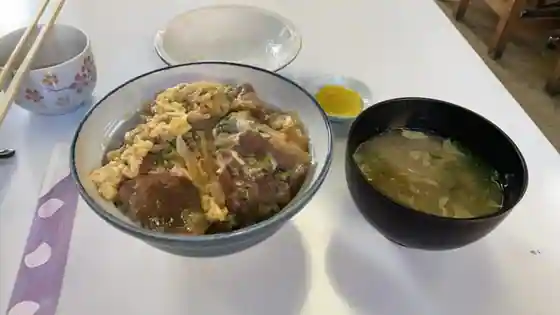

Okawa, Kochi: things to do, food and stays
Okawa · Kochi
Okawa
Highlighted on the Kochi map.

Stay
自然王国 白滝の里

Shizen Okoku Shirataki No Sato
Dining
筒井旅館

Tsutsui Ryokan
Sights
Kogane Taki
Sho Kitagawa Falls
Okawa Town Hall

Mura no Eki

Okina Falls

Nature Okoku Shirataki Village